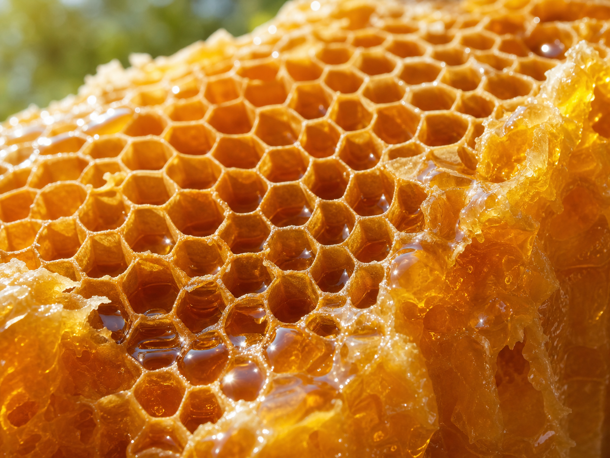

Az ősi "arany rituálé", amely lázban tartja a magyar kutatókat
Egy elfeledett természetes összetevő, amely segíthet fenntartani a szellemi frissességet bármely életkorban.
KATTINTSON IDE A RÉSZLETEKÉRTMagyarországon egyre többen fedezik fel újra azt a természetes kincset, amelyet nagyszüleink még napi szinten alkalmaztak. Ez az "arany folyadék" nem csupán egy édesítőszer, hanem egy komplex biológiai mechanizmus hordozója, amely a legújabb megfigyelések szerint kulcsszerepet játszhat az agyi vitalitás megőrzésében.
A táplálkozási szakértők szerint a titok nem magában az összetevőben rejlik, hanem abban a különleges módszerben, ahogyan azt a szervezetünk hasznosítja. Ez a folyamat segíthet támogatni a koncentrációt és a mentális élességet, különösen azoknál, akik már átlépték az 50. életévüket.

Sokan kérdezik: miért pont most vált ez ilyen népszerűvé? A válasz a modern életmódunkban rejlik. A stressz és a feldolgozott élelmiszerek korában a szervezetünk szomjazik azokra a tiszta forrásokra, amelyek segítenek fenntartani a belső egyensúlyt.
Egy nemrégiben megjelent videós bemutató részletesen elmagyarázza, hogyan alkalmazható ez a módszer otthon, mindössze napi néhány perc alatt. A bemutató rávilágít arra a "rejtett mechanizmusra", amely segít a figyelem és az emlékezőképesség természetes támogatásában.
Ne maradjon le erről az információról. Nézze meg a teljes prezentációt, amíg még elérhető, és tudja meg, hogyan segíthet ez az egyszerű változtatás a mindennapjaiban.
NÉZZE MEG A TELJES VIDEÓT